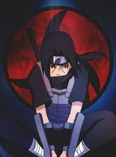
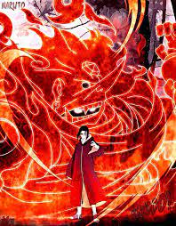

Детства Ита́чи Учихи
Итачи был первым ребёнком в семье Фугаку и Микото Учиха. Раннее детство Итачи было омрачено насилием: когда ему было четыре года, как раз началась Третья Мировая Война Шиноби, и он стал свидетелем сражений. Смерти и разрушения, которые он познал в столь раннем возрасте, нанесли Итачи психологическую травму, из-за чего он стал пацифистом.[19] После встречи с Орочимару, который назвал жизнь без вечности бессмысленной, Итачи серьёзно задумался о том, как ему прожить свою. Он рос довольно замкнутым и предпочитал тренироваться вместо того, чтобы играть со сверстниками. В это время Итачи сдружился с воронами.[20] В возрасте пяти лет он познакомился с Шисуи. Их взгляды оказались очень похожими, поэтому они быстро подружились. Их дружба была столь крепка, что они относились друг к другу как к братьям, и они часто тренировались вместе.[21] Во время нападения Девятихвостого Демона-Лиса на Коноху Итачи отвечал за безопасность своего младшего брата, Саске,[22] и без помощи взрослых он вместе с братом и Изуми Учихой эвакуировался в юго-восточное убежище.[11] Нападение Девятихвостого обострило отношения между руководством Конохи и Учихами, поскольку последних подозревали в том, что именно они контролировали Лиса. Клан Учиха перебазировали на самую окраину деревни, изолировав их от остального населения и упростив тем самым слежку за ними.
Несмотря на свою миролюбивую натуру, Итачи был гением во всех искусствах ниндзя и считался одним из лучших шиноби своего поколения.[23] Он получал наивысшие оценки за каждый предмет в Академии и легко осваивал любой навык, в том числе техники уровня джоунинов. Благодаря своему таланту он стал весьма популярен среди сверстников.[11] Он интересовался историей всего мира, не ограничиваясь лишь знаниями об истории своих деревни и клана, тем самым начиная узнавать о многих действительно важных вещах. Благодаря своим обширным познаниям он был способен понять суть событий прошлого и предположить ход будущих, поэтому он все больше начинал волноваться о настоящем и о грядущем родной деревни.[12] Его талант быстро заметили, и уже в 7 лет он закончил Академию шиноби лишь после года обучения, обогнав всех своих одноклассников. В аниме после выпуска он присоединяется к Команде 2, и, когда Итачи было 8 лет, они получили миссию сопровождать Даймё во время его ежегодного визита в Коноху. Во время этой миссии их конвой был атакован неизвестным в маске, который на глазах у Итачи убил Тенму Изумо, из-за чего у Итачи пробудился Шаринган,[24] который он полностью освоил в том же возрасте.[25] В 10 лет Итачи разрешили в одиночку участвовать в экзамене на Чуунина, и он успешно сдает его, получая соответствующий ранг.
В одиннадцать лет Итачи стал членом Анбу.[26] Семья гордилась успехами Итачи, для отца они были залогом процветания клана Учиха в будущем. Саске считал Итачи примером для подражания. Итачи провёл много времени с младшим братом, обучая его (хотя тренировались они довольно редко) и уделяя внимание, которое отец младшему ребёнку почти не оказывал. Но даже несмотря на близость братьев, Саске не удалось по настоящему понять Итачи,[25] и он считал, что дистанция, сохранявшаяся между ними — следствие разрыва между их способностями, а не недовольство Итачи жизнью шиноби, наполненной бесконечными сражениями. В конце-концов, несправедливое отношение к клану Учиха в деревне подтолкнуло тех к идее государственного переворота. Фугаку, глава клана, а также главный организатор переворота, поощрял продвижение Итачи в рядах Анбу и хотел использовать сына как шпиона. Итачи, тем не менее, понимал, что задуманный Учихами переворот приведёт к вмешательству других государств, и, как следствие, к новой мировой войне шиноби, что никак не могло вызвать у него одобрение. Вместо того, чтобы поддержать клан, Итачи становится двойным агентом и докладывает о действиях клана Третьему Хокаге и Совету Конохи, в надежде, что они найдут способ разрешить конфликт мирно.
Итачи разделял бремя предательства клана с Шисуи. Но через некоторое время последний начал понимать, что о мире не может быть и речи. Шисуи попытался заставить лидеров клана Учиха начать переговоры с помощью своего Котоамацуками, но не успел, так как его правый глаз был украден Данзо Шимурой прежде, чем он смог что либо предпринять. Исчерпав все свои идеи, Шисуи отдаёт свой оставшийся глаз Итачи и просит его защитить деревню и клан, после чего спрыгивает с обрыва и тонет в реке Нака.[28] Итачи испытывает боль после потери друга, достаточную для пробуждения Мангекьё Шарингана. На следующий день некоторые члены клана, уже заподозрив Итачи, открыто обвиняют его в смерти Шисуи и имитации самоубийства, из-за чего он выходит из себя и с лёгкостью побеждает их.[29] С этого момента отношения Итачи с семьей становятся ещё более натянутыми, а его предупреждения о том, что стоит еще раз пересмотреть свои действия, проходят мимо их ушей. В 13 лет он получает повышение на капитана Анбу.
Взросление и Карера Итачи Учихи
С малых лет Итачи был тихим и проницательным ребенком и проявлял необычайную зрелость для своего возраста, а также знания, как действовать в любых обстоятельствах. В то же время Итачи порой показывал свойственную детям наивность во многих бытовых ситуациях, поэтому охотно учился у сверстников.[9] Итачи жил на расстоянии от других, наблюдая за людьми и оценивая различные идеи, стараясь полностью понять их и не принимая ничего на веру.[10] Из-за своей обособленности Итачи редко сближался с кем-либо, однако такой подход позволил ему мыслить и действовать без предрассудков, а также оценивать вещи непредвзято. В аниме Итачи ненамеренно обрел множество друзей и поклонников благодаря своей искренней заботе о других, даже несмотря на свою манеру держаться в стороне.[11] Итачи много размышлял о природе шиноби, а также о родной деревне, её происхождении и будущем.[12] В частности, поэтому он не приобрёл высокомерия из-за своих способностей и достижений, а свои взгляды не подстраивал под эмоции или желание личной выгоды. Также по этой причине он никогда не разделял фанатичную зацикленность на своём клане и гордыню от принадлежности к оному, что было общей чертой многих Учих; хотя Итачи любил свою семью и желал лучшего для неё, он понимал, что есть вещи намного важнее стремлений клана.
Хотя Итачи был по натуре пацифистом, он понимал, что его собственные потребности и чувства должны уходить на второй план перед более важными вещами; с этими убеждениями он становится шиноби. Итачи тренировался до изнеможения, чтобы достичь более высокого уровня как можно быстрее, и никогда не жаловался на трудности в жизни шиноби, мотивируясь простым желанием быть полезным для других. Его приверженность к тренировкам граничила с безрассудством, так, во время одиночных тренировок, он использовал методы, сопряженные со смертельным риском, такие как автоматы со множеством кунаев, от которых нужно было уворачиваться. Благодаря своему опыту ниндзя, Итачи подходил к своим проблемам с куда меньшей жестокостью, чем кто-либо другой, что удовлетворяло его миролюбие. Именно эти черты его характера стали причиной конфликта перед Резней Клана Учиха: он не хотел причинять боль своей семье и пытался найти мирное решение вопроса, но в то же время понимал, что наименее кровопролитным исходом будет истребление всего клана. Как только он принимает это решение, его обычно спокойные взаимоотношения с членами кланов становятся более натянутыми, он в открытую заявляет о своём недовольстве, критикуя их за решения, которые предрешили и их, и его судьбу.
Несмотря на всю ту боль, которую Итачи испытал при убийстве клана, он всё равно не винил руководство Конохи, которое поручило ему это задание; хотя он и не доверял Данзо лично, Итачи понимал, что его интересы направлены лишь на благополучие Конохи. Но Итачи — отчасти из-за необходимости присоединения к Акацуки, — сильно изменяется после уничтожения клана и практически не показывает никаких эмоций. Итачи начинает чаще использовать грубую силу для достижения целей и разрешает своему партнёру, Кисаме, использовать насилие, утверждая, что так необходимо сделать ради достижения целей Акацуки.[13] Но Итачи всё же не полностью подавил свою миролюбивую натуру, из-за чего в некоторых ситуациях пытается обуздать Кисаме, если сопутствующий ущерб окажется слишком высоким для них или для других. И хотя Кисаме иногда был недоволен его действиями, он считал Итачи хорошим другом и всегда слушал его наставления. Недолго он состоял в партнёрах с Джузо, к которому, по-видимому, он испытывал немалое уважение и после его смерти вложил в его руки остатки Кубикирибочо как знак уважения к погибшему товарищу.
Защита Конохи всегда была на первом месте у Итачи,[14] но не менее важной для него задачей было благополучие Саске. С самого рождения Саске, Итачи приглядывал за ним и наблюдал за его взрослением. Они вместе целыми днями гуляли в лесах Конохи и самостоятельно выполняли ничего не значащие миссии. Когда Итачи начал становиться опытным ниндзя и привлек к себе основное внимание отца, он порою все равно противился его пожеланиям в пользу Саске и тратил это время на своего младшего брата, делая его таким образом счастливее. Саске, желая быть похожим на старшего брата, часто просил его потренироваться с ним в искусстве ниндзя. Но Итачи почти никогда не тренировался с ним, а лишь щелкал его по лбу и обещал, что они потренируются в следующий раз. К сожалению, он никогда не сдерживал эти обещания.[15]
Защита Конохи всегда была на первом месте у Итачи,[14] но не менее важной для него задачей было благополучие Саске. С самого рождения Саске, Итачи приглядывал за ним и наблюдал за его взрослением. Они вместе целыми днями гуляли в лесах Конохи и самостоятельно выполняли ничего не значащие миссии. Когда Итачи начал становиться опытным ниндзя и привлек к себе основное внимание отца, он порою все равно противился его пожеланиям в пользу Саске и тратил это время на своего младшего брата, делая его таким образом счастливее. Саске, желая быть похожим на старшего брата, часто просил его потренироваться с ним в искусстве ниндзя. Но Итачи почти никогда не тренировался с ним, а лишь щелкал его по лбу и обещал, что они потренируются в следующий раз. К сожалению, он никогда не сдерживал эти обещания.[15]
Смерть Итачи
Битва Братьев, Предначертанная Судьбой
Когда Саске прибывает, они начинают с обмена Гендзюцу. По просьбе Саске,
Итачи рассказывает ему о Тоби, который зовёт себя Мадарой, а также о
тайнах Мангекьё Шарингана и даже более мощного Вечного Мангекьё
Шарингана. Итачи выражает разочарование тем, что Саске не получил
собственный Мангекьё, но говорит, что он может воспользоваться глазами
Саске, чтобы получить Вечный Мангекьё. Обмен иллюзиями заканчивается,
когда Саске преодолевает Цукуёми Итачи, таким образом начиная реальный
бой. Их атаки ниндзюцу распространяются наружу, где Саске и Итачи
соревнуются своими Техниками Великого Огненного Шара. Когда Саске
начинает брать верх, Итачи решает использовать Аматерасу. В то время,
как он пытается попасть по Саске, он начинает сжигать лес, но всё же
немного после ему удаётся захватить брата. Саске сбрасывает свою кожу,
избегая пламени и тем самым спасая себя, и применяет Стихию Огня:
Технику Великого Огненного Дракона, застав Итачи врасплох. Итачи
уворачивается от атаки, но Саске сообщает ему, что Итачи не был его
целью.
После атаки Саске, в небе формируются грозовые облака и полыхают молнии, что позволяет Саске использовать на Итачи Кирин. Хотя убежище было уничтожено, Итачи удаётся выжить благодаря Сусаноо. Активировав Сусаноо, Итачи начинает медленно надвигаться на Саске. Использовав всю свою чакру на Кирин для победы над Итачи, Саске в отчаянье активирует Проклятую Печать Неба, из которой вскоре появляется Орочимару. Он возникает из тела Саске в облике техники Восьми Ветвей и демонстрирует свою решимость на этот раз точно захватить тело Саске и сделать его своим. Итачи, продлив сражение специально для того, чтобы извлечь Орочимару, пронзает его Клинком Тоцука, запечатывая Орочимару и тем самым снимая печать с тела Саске.
Итачи возобновляет свой подход, сказав, что полон решимости забрать
глаза Саске, и последний предпринимает свои последние попытки держать
его подальше, но безуспешно. Сусаноо продолжает защищать Итачи, но
понемногу исчезает, после чего Итачи начинает кашлять кровью. Когда он,
наконец, достигает Саске, Итачи должен был захватить глаза брата, но
вместо этого только щелкает по лбу. (Щелчок запечатывает Аматерасу в
глаза Саске с установкой активироваться при виде Шарингана Тоби, чтобы
защитить Саске от него.) Подобно тому, как он описал смерть для Кисаме,
в свой последний момент Итачи, неспособный сохранить свою ложную личину,
искренне улыбается Саске, извиняется и говорит, что это конец, после
чего болезнь берёт вверх, и он падает замертво с улыбкой на лице.
Итачи так же воскрещается
подробнее здесь...